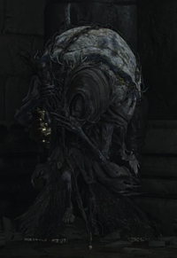

|  |
Old Woman of Londor"Oh, my, I see you're Unkindled. Her name is unknown. She's a pilgrim and an assassin in the service of the Sable Church of Londor. She's guiding Anri of Astora, from the shadows, at the request of Yuria of Londor. |